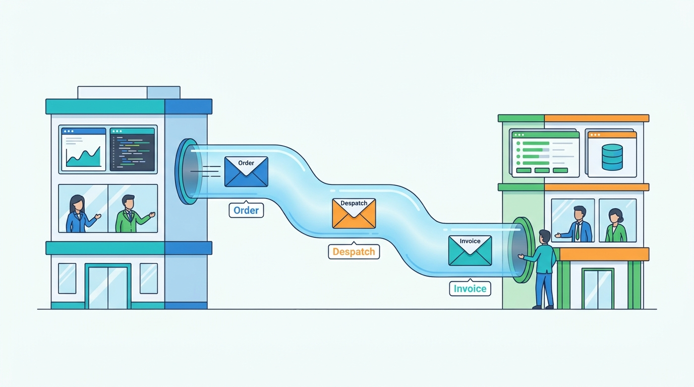

Part V — CHANNELS: Selling Everywhere
Documents Between Companies: EDI, Punchout and E-Invoicing
AI-assisted: researched and written with Claude Code, images generated with the Gemini API. How this works

Part V — CHANNELS: Selling Everywhere
AI-assisted: researched and written with Claude Code, images generated with the Gemini API. How this works
